你好，我是郭震！
Claude Code编程智能体是好用，但是必须得先本地部署环境，然后接入API才能使用，这两个门槛卡住了不少人。
这两天我发现一个Vibe Coding 项目：MonkeyCode
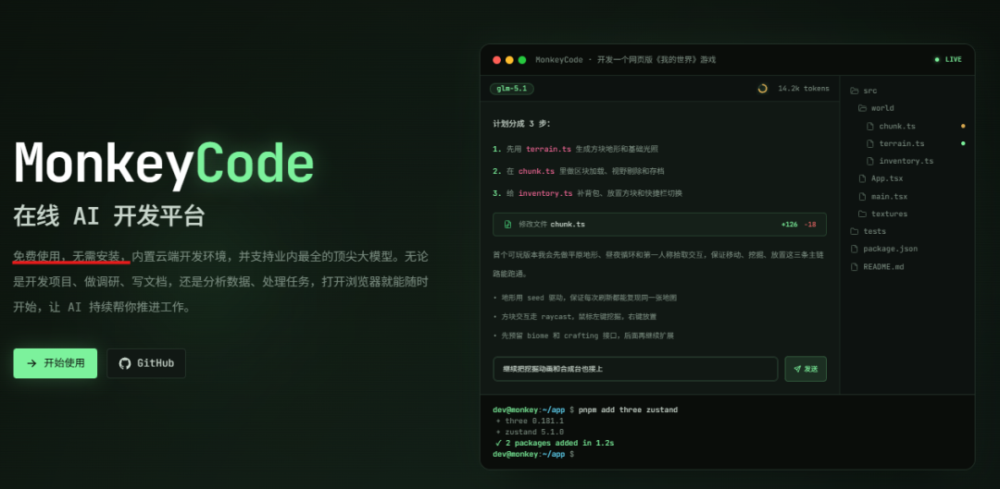
它解决了这两个痛点，开箱即用，无需接入API，看着像是符合国产版的Claude Code，就是不知道vibe coding 开发项目如何，这篇文章我就来实测下，感兴趣的可以看下。
1 效果演示
这是我的Excel原始文件：
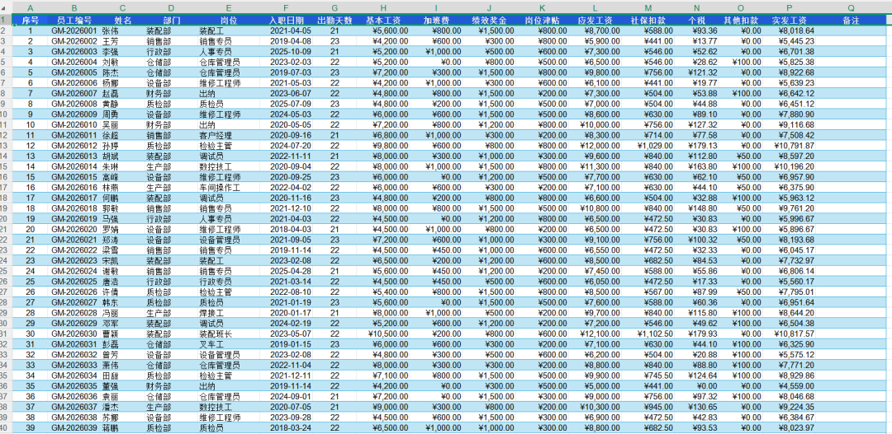
导入使用MonkeyCode开发的网页小工具后，生成如下激光蓝绿的柱状图：
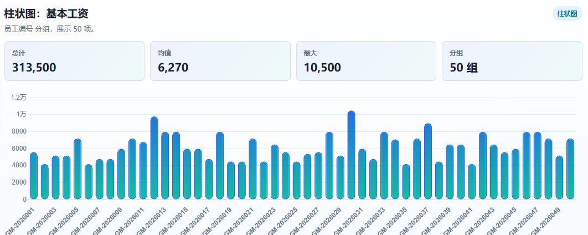
折线图：
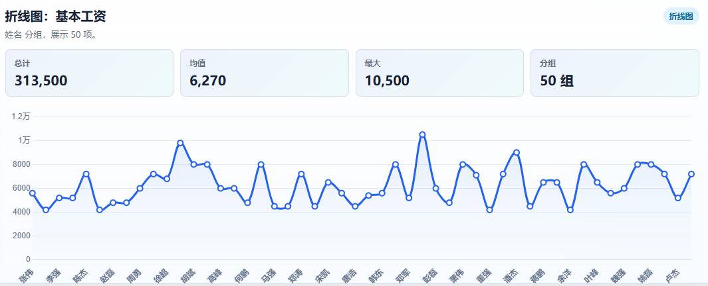
饼状图：
并且还支持选择任意列 可视化展示：
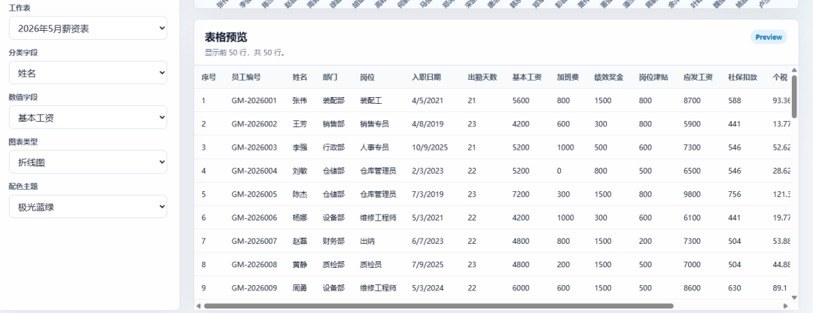
很多 AI Coding 工具最大的问题是：它能写代码，但写完以后还要你自己跑；它能解释报错，但不能在真实环境里继续试。
MonkeyCode无需搭建环境，开箱即用。
2 MonkeyCode 介绍
MonkeyCode 之所以做到这点，是它把在线终端、文件管理、远程协助放在同一个工作台里。
支持多端使用，不论你是在公司用电脑，还是在地铁上用手机，都能随时随地控制 AI 帮你写代码、改 Bug：
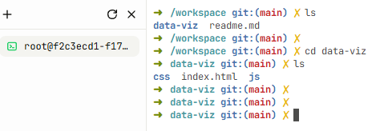
无需繁琐配置 API，开箱后直接开用！
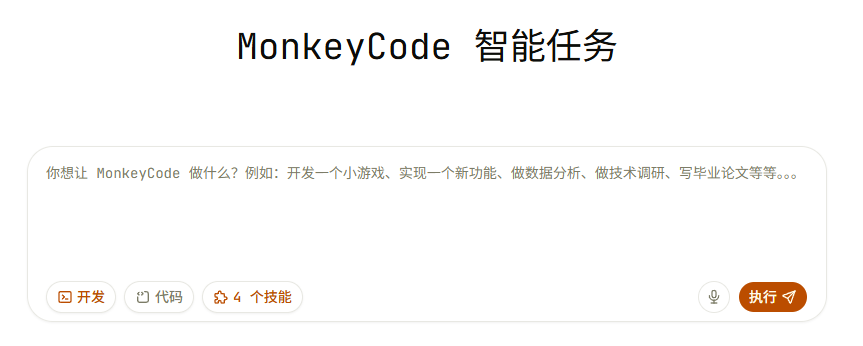
这个项目在 Github 上竟然是完全开源的：
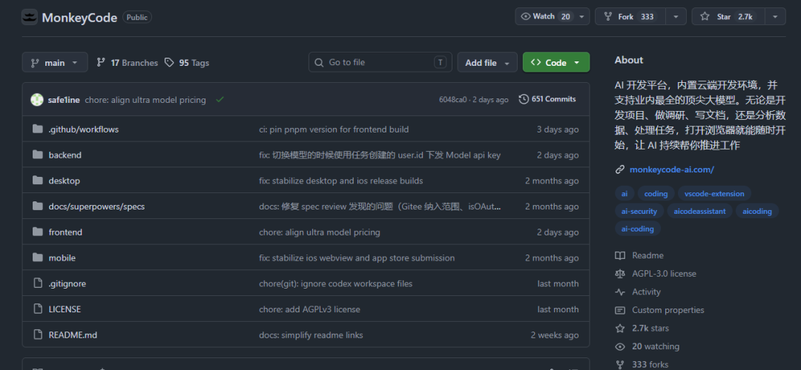
3 MonkeyCode 实测
接下来实测，先建立项目：
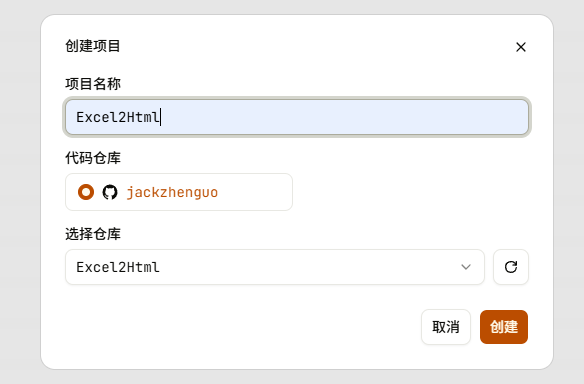
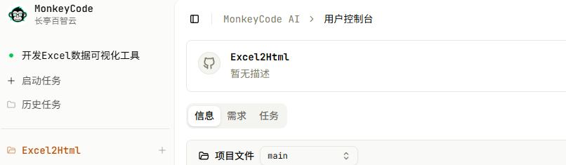
启动AI开始仓库编写任务，任务内容文本框中输入如下任务：
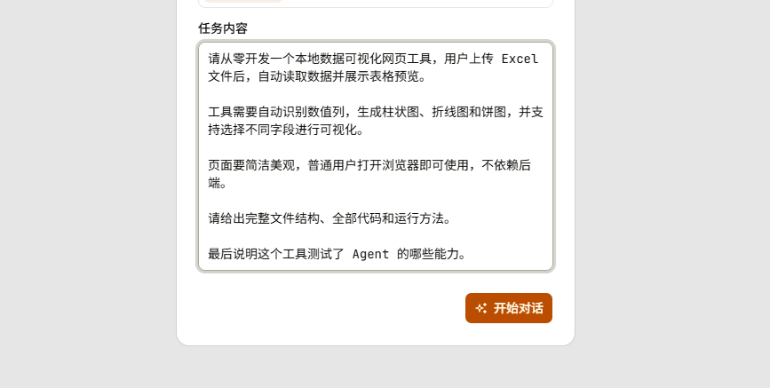
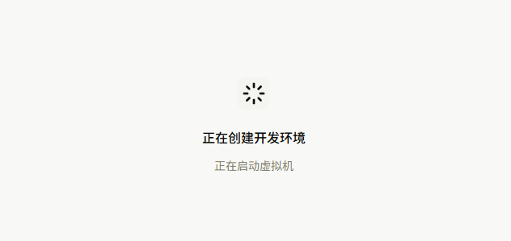
已经进入Monkey Code智能体开发阶段：
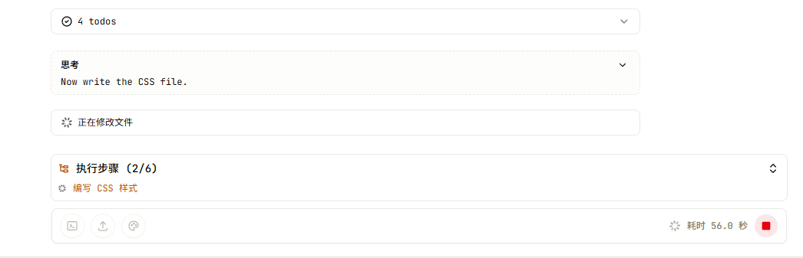
传统工具此时就要让你在本地装各种 Node、Python 环境，报错了还得自己配。但它直接在云端给你分配了一台开发机，全自动跑起来。
接下来，项目目录右侧同步生成，如下所示：
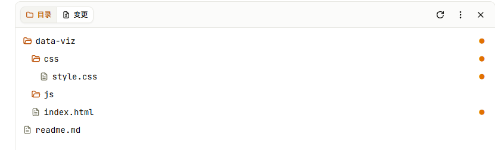
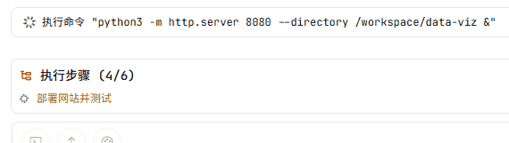
大概3分钟，项目6个计划执行完，如下我已经提交到远程仓库：
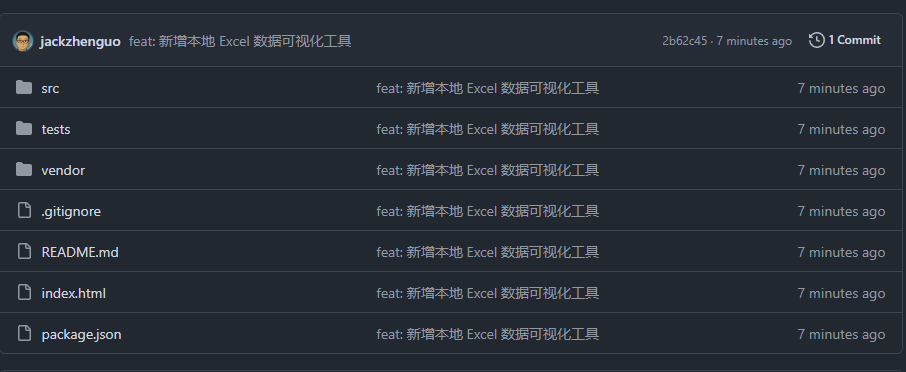
直接点击链接打开，出现如下网页：
上传一个Excel，转化为Html，可视化结果如下：
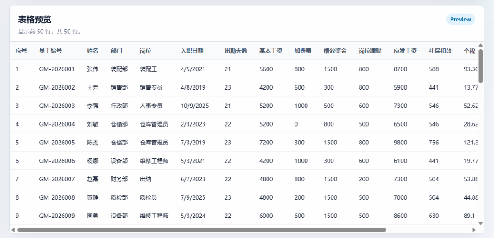
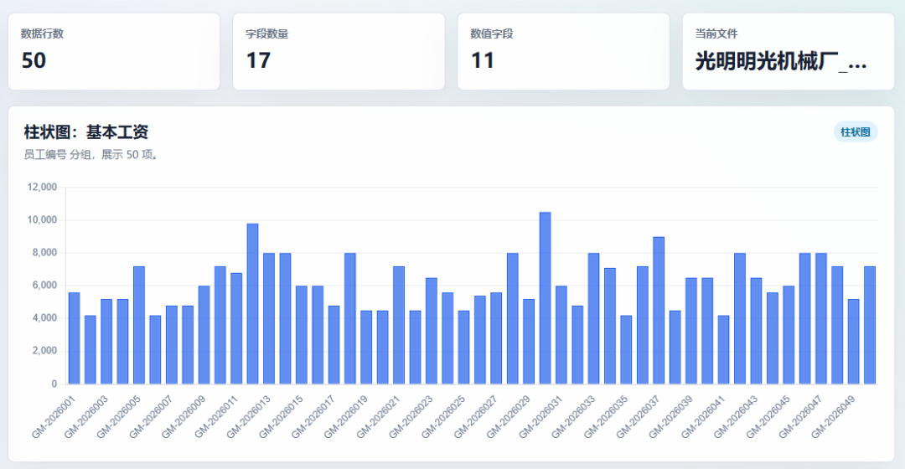
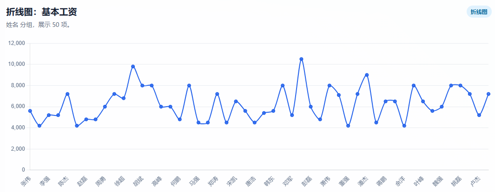
饼图：
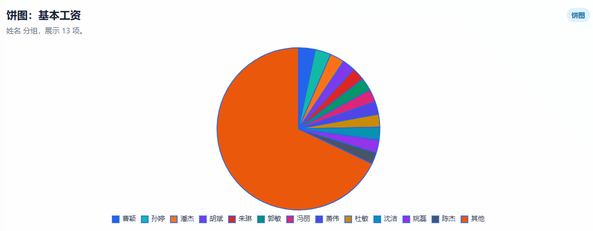
支持数字字段的配置，选择字段岗位津贴，折线图如下：
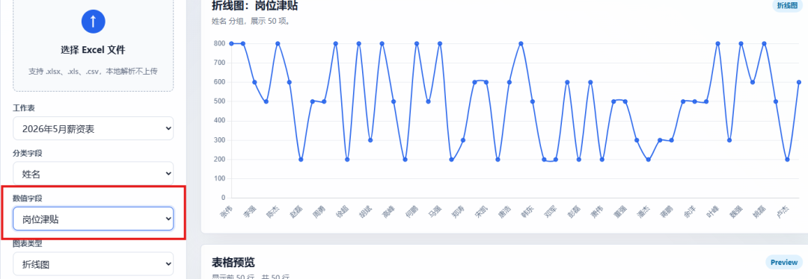
这些图配置效果一般，vibe coding下，让它生成更好展示效果图，如下嗾使：
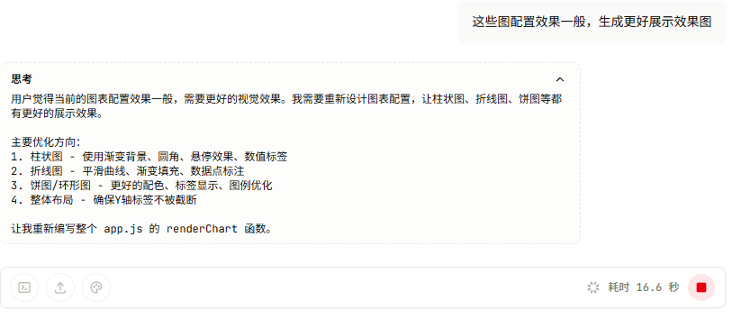
处理完成后，得到如下界面：
日落暖橙 柱状图：
墨色商务 柱状图：
折线图：
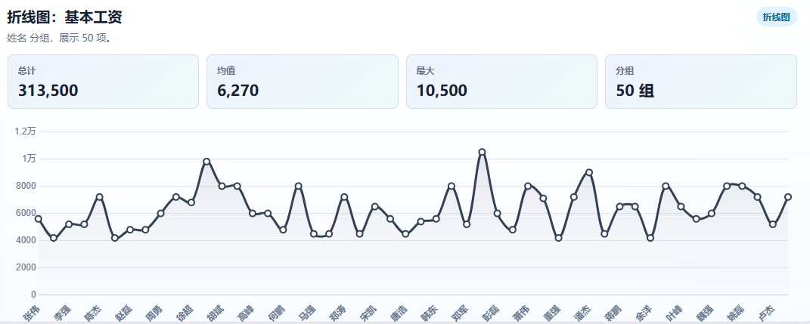
饼状图：
真正的项目不是“生成一段代码”就结束，而是要让改动进入 commit、PR、review、继续迭代，项目已经全部开源到我的github，下载地址如下所示：
https://github.com/jackzhenguo/Excel2Html/tree/master
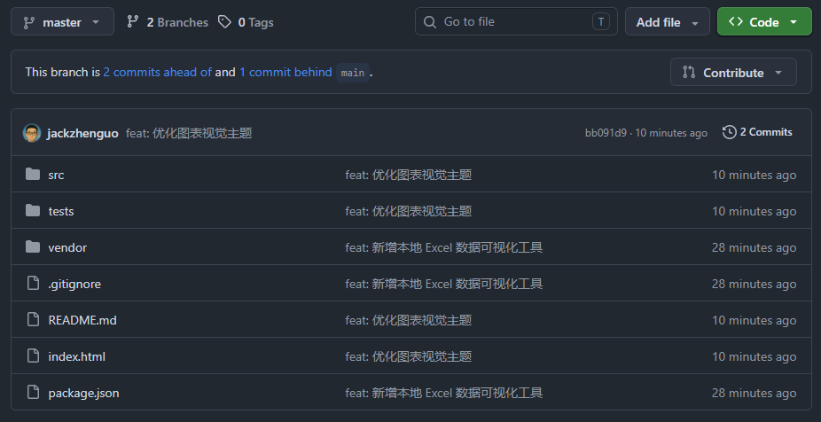
MonkeyCode 作为开源项目，哪怕你们公司对代码隐私要求极高，你也可以直接把它拉下来
我给大家搞了个专属入群邀请码，扫码入群可以领福利、交流技术问题：
最后总结一下
本篇实测了 MonkeyCode，它解决了 Claude Code 编程的两个痛点：不用本地部署环境，也不用自己接入 API。
整体体验下来，它更像是一个“在线版编程工作台”：提需求、写代码、跑项目、看效果、继续修改，都能在同一个页面完成。
这也正是 Vibe Coding 的特点：先跑起来，再不断调，最后把一个想法真正做成能用的工具APP等。
全文约 1238字，36图。如果你觉得这篇文章对你有帮助，也欢迎给我一个三连点击：点赞、转发和在看；如果可以，再帮我点一个⭐。谢谢你看到这里，我们下篇再见。